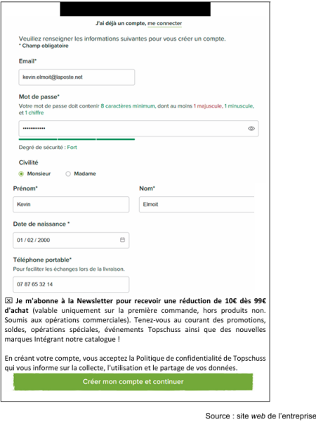
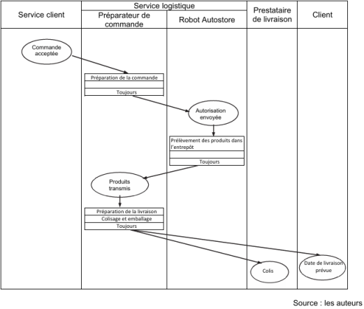

Dossier 3 – Les technologies numériques au service de la performance de Topschuss
Méthode : Documents à exploiter
Document 10 - Données chiffrées sur le marché des articles de sports en extérieur
Document 11 - Extraits de la page d’accueil du site web
Document 12 - Formulaire de création de compte sur le site web
Document 13 - Processus de préparation des commandes
Document 14 - Autostore, système automatisé de préparation des commandes
Document 10 - Données chiffrées sur le marché des articles de sports en extérieur
Le marché des articles de sports en extérieur en France connaît une croissance plus rapide que dans la plupart des autres pays européens : + 8,6 % entre 2020 et 2021, contre + 7,4 % en moyenne en Europe.
Chiffre d’affaires Topschuss sur le marché des articles de sports en extérieur période 2020 à 2022
Objectif pour 2025 : dépasser le cap des 100 millions d’euros de chiffre d’affaires
Années | Chiffre d'affaires Topschuss en euros |
|---|---|
2020 | 34 624 801 |
2021 | 44 886 999 |
2022 | 55 143 320 |
Source : registre du commerce et des sociétés
Document 11 - Extraits de la page d’accueil du site web
Document 12 – Formulaire de création de compte sur le site web

Document 13 - Processus de préparation des commandes

Document 14 - Autostore, système automatisé de préparation des commandes
Le robot Autostore permet de mettre en œuvre la technologie « Goods to person » : c’est une technique de préparation de commandes selon laquelle les biens parviennent directement au préparateur de commandes grâce à des systèmes automatisés. De cette manière, ce dernier reste à son poste et reçoit les produits nécessaires pour composer la commande, sans avoir à se déplacer.
Topschuss a installé dans son entrepôt seize robots qui, toutes les sept secondes, apportent un produit au préparateur de commande, ce qui signifie qu’entre 330 et 350 produits sont à récolter chaque heure. Dans le même temps, l’équipe logistique a installé une nouvelle chaîne d’emballage qui lui permet d’optimiser l’utilisation du carton. La volonté est de réduire au minimum la taille du carton afin d’optimiser la consommation de cette ressource en forte augmentation mais aussi réduire le nombre de camions. Moins d’air dans les colis, c’est plus de place dans les remorques. Cette chaîne, qui peut traiter 500 colis par heure, remplacerait 36 postes de préparateurs de commandes.
Un rythme qui impose que les équipiers évoluant sur le système soient formés au logiciel pilotant le robot et prêts à suivre ce rythme. Topschuss a mobilisé 10 millions d’euros de dépenses d’investissement dans la robotisation de son entrepôt logistique.
Source : extraits adaptés de skieur.com